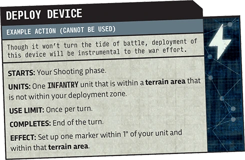

Performing Actions
Digital 11ESome rules allow units to perform actions. Each action states:
- STARTS: When it is started.
- UNITS: Which friendly units can perform it.
- USE LIMIT: How many times friendly units can start it.
- COMPLETES: When it completes.
- EFFECT: What the effects of completing it are.
- Any additional restrictions that may apply.
WHERE TO FIND ACTIONS
The actions players can use can be found in other publications such as mission packs. All players can use core actions, while other actions may have restrictions such as army faction.

